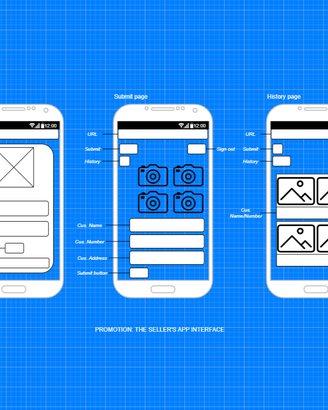

My Work

Dashboard
Through business dashboards, companies can accurately understand and have an overview of the productivity of different departments, as well as timely capture trends on various platforms.

Flowchart/Wireframes
Understanding customers, then communicating their requirements to relevant departments. Developing ideas and designing flowcharts and wireframes to support the design and IT teams.

Get Insights
Visual representations provide users with related information to meet their daily needs, and provide multi-dimensional views of data sets for users to explore, ask questions while contemplating, and discover in-depth information.